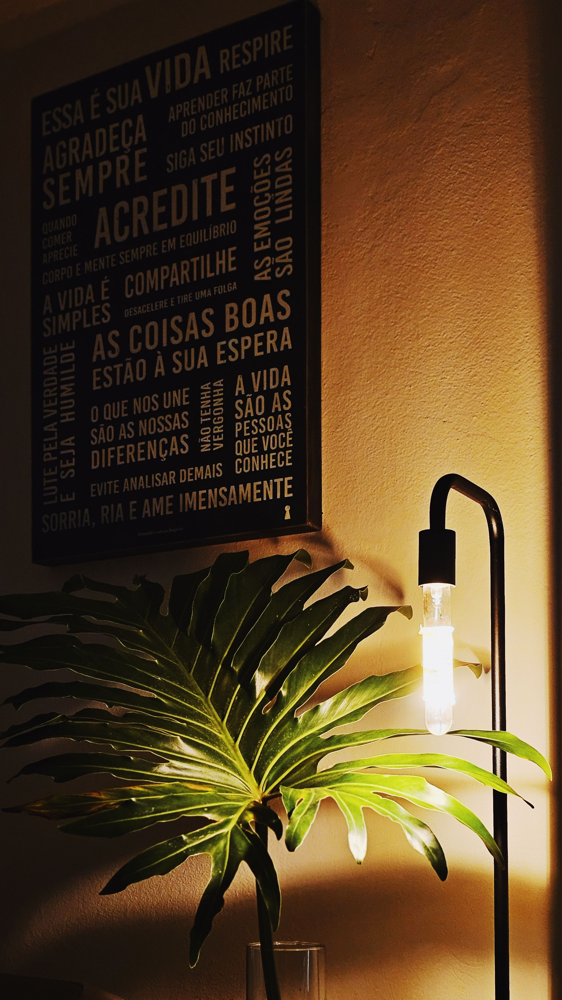

En este artículo
- Introducción
- Elegir el lugar adecuado para el jardín vertical
- Escoger una estructura segura y proporcionada
- Seleccionar plantas compatibles entre sí
- Resolver el riego, el drenaje y la protección de la pared
- Diseñar una composición atractiva sin sobrecargar
- Crear una rutina de mantenimiento sencilla
- Errores frecuentes al crear un jardín vertical
- Cómo adaptar el proyecto a la vida diaria
- Preguntas frecuentes
- Conclusión
Introducción
Guía completa para crear un jardín vertical en casa: ubicación, estructura, plantas, riego, drenaje, diseño y mantenimiento para aprovechar las paredes con seguridad. La diferencia entre una idea atractiva y un espacio que funciona durante años suele estar en la planificación. Antes de comprar, instalar o mover elementos, conviene observar las condiciones reales, medir y pensar en las rutinas de quienes utilizan la vivienda.
Esta guía desarrolla el proceso paso a paso con criterios prácticos. El objetivo no es copiar una fotografía, sino tomar decisiones adaptadas al tamaño disponible, la luz, el mantenimiento y el presupuesto. Así es posible obtener un resultado agradable sin introducir soluciones que después resulten difíciles de mantener.
Elegir el lugar adecuado para el jardín vertical
Antes de comprar soportes o plantas, observa la pared durante varios días. La cantidad de luz, la orientación de la ventana, la ventilación y la cercanía a una fuente de agua condicionan casi todas las decisiones posteriores. Una pared luminosa no siempre recibe sol directo, y esa diferencia determina qué especies pueden mantenerse sanas. También conviene comprobar si existen corrientes de aire, calefactores o aparatos que resequen el ambiente. El objetivo es encontrar un punto donde las plantas reciban condiciones estables sin dificultar el paso ni el uso cotidiano de la habitación.
La pared debe estar seca, firme y ser capaz de soportar el peso del sistema completo. Hay que pensar en el peso de la estructura, las macetas, el sustrato y el agua después del riego, no solo en las plantas recién instaladas. En viviendas alquiladas o paredes delicadas puede ser preferible utilizar una estructura autoportante o una estantería vertical. Dejar una pequeña separación entre las macetas y la pared facilita la ventilación y ayuda a detectar rápidamente cualquier fuga o exceso de humedad.
También merece la pena pensar en la accesibilidad. Un jardín vertical muy alto puede resultar espectacular, pero pierde practicidad si cada riego exige una escalera. Las plantas que necesitan más observación deberían quedar a una altura cómoda. Reservar la parte superior para especies de menor mantenimiento y la zona media para las que requieren podas, cosecha o revisiones frecuentes hace que el conjunto sea mucho más sencillo de cuidar.
Escoger una estructura segura y proporcionada
Existen sistemas modulares, paneles con bolsillos, jardineras fijadas a una celosía, estanterías y estructuras de madera o metal. No hay una opción universalmente mejor: la elección depende del tamaño de la pared, del presupuesto y de la posibilidad de realizar perforaciones. Para empezar, un sistema modular pequeño permite aprender cómo responde el espacio antes de cubrir una pared completa. Los recipientes individuales también facilitan retirar una planta enferma o cambiarla de posición sin desmontar todo el jardín.
Los anclajes deben corresponder al tipo de pared y al peso previsto. Un soporte pensado para una pared maciza puede no ser adecuado para un tabique ligero. Si existe cualquier duda sobre la resistencia, es prudente reducir el tamaño del proyecto o solicitar ayuda profesional para la fijación. La seguridad es especialmente importante cuando el jardín está sobre un sofá, una mesa o una zona de paso. Ningún resultado decorativo compensa una instalación inestable.

La estructura también debe permitir limpiar y revisar la parte posterior. Los sistemas demasiado cerrados pueden ocultar humedad, hojas caídas o pequeños problemas de drenaje. Un diseño desmontable y accesible facilita el mantenimiento. Si se utiliza madera, conviene escoger una pieza apropiada para el ambiente y protegerla de la humedad; si se utiliza metal, los acabados resistentes a la corrosión prolongan su vida útil.
Seleccionar plantas compatibles entre sí
La selección de especies debe partir de la luz real del lugar. Para una pared con iluminación indirecta pueden funcionar muchas plantas de interior adaptadas a esas condiciones, mientras que una zona soleada requiere especies capaces de tolerar varias horas de radiación. Agrupar plantas con necesidades parecidas simplifica el riego y evita que una reciba demasiada agua mientras otra permanece seca. Antes de comprar, conviene investigar el tamaño adulto, la velocidad de crecimiento y la humedad que necesita cada especie.
La forma de crecimiento ayuda a construir una composición equilibrada. Las plantas colgantes suavizan los bordes y cubren parte de la estructura; las especies compactas aportan volumen; y algunas plantas verticales crean puntos de interés. No es necesario llenar todos los huecos desde el primer día. Dejar espacio permite que las plantas crezcan y evita una apariencia saturada al cabo de pocos meses. Además, facilita la circulación de aire entre hojas.
Si el jardín vertical estará en una cocina, un balcón o una zona frecuentada por niños o animales, la elección debe considerar también el uso del espacio. Las plantas aromáticas pueden ser útiles cerca de la cocina si reciben suficiente luz. En hogares con mascotas o niños pequeños conviene comprobar la seguridad de las especies seleccionadas y colocar fuera de alcance aquellas que puedan causar problemas.
Resolver el riego, el drenaje y la protección de la pared
El agua es uno de los puntos más delicados de un jardín vertical. Cada recipiente necesita una forma clara de evacuar o controlar el exceso. En sistemas pequeños, regar manualmente permite conocer el consumo de cada planta. En instalaciones grandes puede resultar útil un riego por goteo bien regulado, pero incluso entonces hay que revisar periódicamente emisores, conexiones y bandejas de recogida. Automatizar no significa olvidarse del jardín.
Nunca conviene asumir que todas las macetas necesitan agua el mismo día. La altura, el tamaño del recipiente, la especie y la temperatura pueden modificar la velocidad de secado. Comprobar el sustrato antes de regar reduce el riesgo de encharcamiento. Las señales de exceso y falta de agua pueden parecerse, por lo que observar raíces, hojas y humedad resulta más fiable que seguir un calendario rígido.
Para proteger la pared se pueden utilizar bandejas, paneles impermeables o separaciones que eviten el contacto directo con el agua. Después de instalar el sistema, realiza varios riegos de prueba y observa si aparecen gotas, escurrimientos o zonas que permanecen húmedas. Corregir una pequeña fuga al principio es mucho más sencillo que reparar pintura, yeso o muebles dañados meses después.

Diseñar una composición atractiva sin sobrecargar
Un jardín vertical funciona mejor visualmente cuando existe cierta repetición. Repetir algunas especies, colores de macetas o texturas crea continuidad y evita que el conjunto parezca una colección accidental. Puedes elegir una planta dominante y acompañarla con dos o tres variedades complementarias. Otra posibilidad es trabajar con una gama de verdes y utilizar la forma de las hojas como principal contraste.
La proporción debe relacionarse con la pared y con los muebles cercanos. En una habitación pequeña, un panel compacto puede tener más presencia que una estructura que ocupe toda la superficie. Antes de perforar, marca el contorno con cinta de pintor y observa el resultado desde distintos puntos. Este sencillo ensayo ayuda a comprobar altura, anchura y relación con puertas, ventanas y circulación.
También conviene pensar en cómo se verá el jardín dentro de seis meses. Algunas plantas crecerán hacia abajo, otras hacia los lados y otras necesitarán poda. Diseñar con ese crecimiento futuro evita que unas especies tapen por completo a las demás. La composición puede evolucionar: mover macetas, sustituir una planta o podar forma parte normal del mantenimiento.
Crear una rutina de mantenimiento sencilla
Una revisión semanal breve suele ser más efectiva que intervenciones grandes y esporádicas. Comprueba humedad, hojas deterioradas, presencia de insectos y estabilidad de los soportes. Retira material vegetal seco antes de que se acumule y limpia las bandejas de drenaje. Girar o intercambiar algunas macetas puede ayudar cuando una zona recibe más luz que otra.
La poda mantiene la forma y mejora la ventilación. Utiliza herramientas limpias y evita retirar demasiado follaje de una sola vez. Si una planta crece mal, no intentes compensarlo únicamente con fertilizante: primero revisa luz, riego, sustrato y espacio para las raíces. Muchas dificultades de cultivo se explican por condiciones ambientales inadecuadas.
Con el tiempo será necesario renovar parte del sustrato, cambiar recipientes o sustituir plantas. Un jardín vertical saludable no es una instalación estática. Registrar qué especies funcionan mejor en esa pared ayuda a tomar decisiones futuras y permite construir un conjunto cada vez más adaptado a la vivienda.

Errores frecuentes al crear un jardín vertical
Uno de los errores más comunes es instalar demasiadas plantas desde el principio. El entusiasmo inicial puede llevar a llenar todos los huecos, pero las plantas crecen y necesitan ventilación. Otro fallo es elegir especies únicamente por su apariencia, sin considerar la luz o el riego. También es frecuente subestimar el peso del conjunto después de regar. Planificar con margen reduce estos problemas y permite modificar la composición a medida que se aprende.
El exceso de agua merece especial atención. En una instalación vertical, una fuga puede afectar varias macetas y terminar en el suelo o la pared. Por eso conviene regar lentamente, comprobar bandejas y observar cómo se distribuye el agua. Si las plantas inferiores permanecen siempre más húmedas, quizá el sistema necesita ajustes. La prevención es más sencilla que corregir daños por humedad.
Finalmente, no conviene ocultar por completo la estructura con decoración adicional. Debe ser posible acceder a fijaciones, recipientes y drenajes. Un jardín vertical bonito también tiene que poder desmontarse parcialmente, limpiarse y repararse. Diseñar pensando en esas tareas desde el principio prolonga la vida del proyecto.
Cómo adaptar el proyecto a la vida diaria
Antes de dar por terminado el proyecto, conviene observarlo durante varias semanas. La luz cambia con las estaciones y la frecuencia de riego también puede variar. Anotar qué macetas se secan primero, qué especies crecen hacia la ventana y dónde aparece humedad permite ajustar la distribución. Esta fase de observación convierte una instalación decorativa en un sistema realmente adaptado a la casa.
El presupuesto puede controlarse comenzando con una estructura pequeña y ampliándola solo cuando el mantenimiento resulte sencillo. Reutilizar recipientes es posible si son seguros, están limpios y ofrecen drenaje adecuado, pero los elementos de fijación no deberían improvisarse. Invertir en soportes fiables, protección de la pared y recipientes funcionales suele ser más importante que comprar muchas plantas de una vez.
Si el jardín vertical comparte espacio con muebles, enchufes o aparatos eléctricos, la gestión del agua debe ser todavía más cuidadosa. Mantén una distancia prudente y evita recorridos de agua sobre instalaciones eléctricas. La combinación de vegetación y paredes puede ser muy atractiva, pero el diseño debe respetar siempre las condiciones de seguridad de la vivienda.
Preguntas frecuentes
¿Se puede crear un jardín vertical en una casa pequeña?
Sí. Un panel reducido, una celosía con varias macetas o una estantería estrecha pueden aprovechar una pared sin ocupar demasiada superficie. Lo importante es adaptar el tamaño a la luz, al peso y al mantenimiento disponible.
¿Es obligatorio instalar riego automático?
No. En jardines verticales pequeños, el riego manual puede ser más sencillo y permite observar cada planta. Los sistemas automáticos son útiles en instalaciones grandes, pero requieren regulación y revisiones.
¿Cómo evitar humedad en la pared?
Utiliza recipientes con drenaje controlado, bandejas o una barrera protectora, deja ventilación detrás de la estructura y realiza pruebas de riego antes de considerar terminada la instalación.
Conclusión
Cómo crear un jardín vertical en casa y aprovechar mejor las paredes es un proyecto que mejora cuando se toman decisiones a partir del uso real del espacio. Medir, observar las condiciones, priorizar la funcionalidad y elegir soluciones que puedan mantenerse con facilidad evita compras innecesarias y permite que el resultado evolucione con la vivienda.
No es necesario transformar todo de una vez. Empezar por los cambios que resuelven necesidades concretas, comprobar cómo funcionan y ajustar después suele ofrecer mejores resultados. La estética cobra más sentido cuando acompaña a la comodidad, al orden y a un mantenimiento razonable.